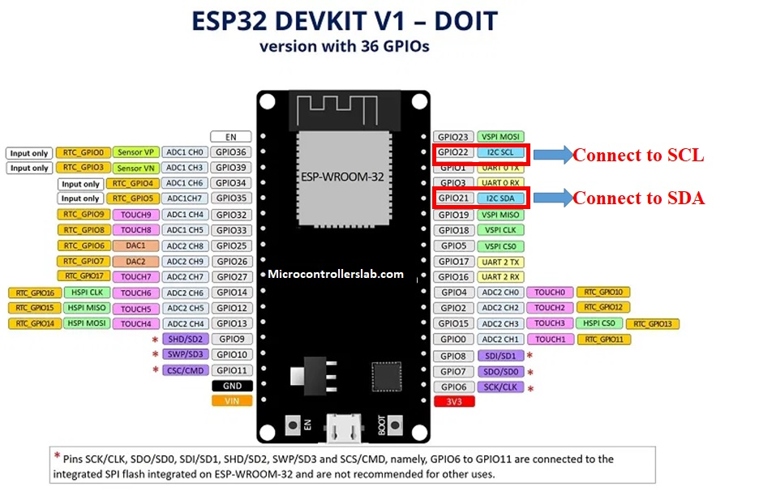

Descripció general del projecte
definicio del que s'ha fet en aquest apartat. Explicar que utilitzarem el microcontrolador ESP32
El sensor que implementarem en el nostre projecte és un sensor de pressió sonora de la marca de components 'PCB Artists'. Les característiques principals d'aquest sensor són:
El sensor per defecte s'inicialitza amb la següent configuració:
Ponderació A: la utilitzada per determinar el soroll ambiental d'activitats. És la utilitzada pels diferents càlculs de nivell equivalent diurn i nocturn que es regulen a les ciutats.
1000 ms averaging duration (“slow mode” de sonòmetres comercials que trobem al mercat)
Interrupt function disabled
L'historial de registres s'actualitza segons el 'averaging duration' (1000 ms) i es manté un registre de valor màxim i mínim.
Aquesta configuració per defecte és la que utlitzarem en el nostre projecte.
La conexió amb el microcontrolador és la tipica en una conexió I2C. En el nostre microcontrolador ESP32 utilitzem els pins:
La comunicació entre el sensor i el microcontrolador es fa per mitjà d'un bus I2C. Es tracta d'una conexió sincrona que només requereix d'un bus de dos canals:
L'alimentació del sensor es realitza a través del pin de 3V3. Els canals del bus I2C es conecten a la ESP32 pels pins: GPIO22 i GPIO21

Hem creat un codi de prova per comprovar el funcionament del sensor i la comunicació amb el microcontrolador.
Hem implementat dues llibreries:
include <Arduino.h>
include <Wire.h> //per la comunicació I2C amb el sensor
Hem definit dos valors constants que utilitzarem en la comunicació I2C:
define PCBARTISTS_DBM 0x48
define I2C_REG_DECIBEL 0x0A
Definim una funció que ens permet llegir un únic byte del dispositiu I2C:
byte reg_read(byte addr, byte reg)
{
Wire.beginTransmission(addr);
Wire.write(reg);
Wire.endTransmission();
Wire.requestFrom(addr, (uint8_t)1);
byte data = Wire.read();
return data;
}
En el block 'setup' iniciem els objectes necessaris:
void setup()
{
Serial.begin(115200);
Wire.begin();
}
En el loop basicament llegim el registre de memoria del dispositiu I2C que es correspon amb el nivell de pressió sonora detectat (1 byte). Posteriorment es mostra aquest nivell pel serial monitor. Es repeteix aquest procés cada 2 segons:
void loop()
{
byte sound_level = reg_read(PCBARTISTS_DBM, I2C_REG_DECIBEL);
Serial.print("Sound Level (dB SPL) = ");
Serial.println(sound_level);
delay(2000);
}
void loop()
{
...
byte SPL_dBA = reg_read(PCBARTISTS_DBM, I2C_REG_DECIBEL);
PUT_request(client, SPL_dBA);
...
}
definicio del que s'ha fet en aquest apartat
contingut subapartat
definicio del que s'ha fet en aquest apartat